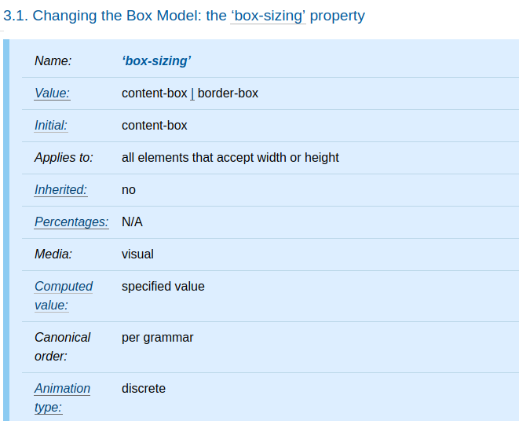
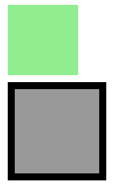
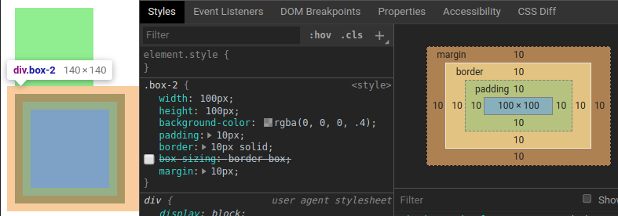
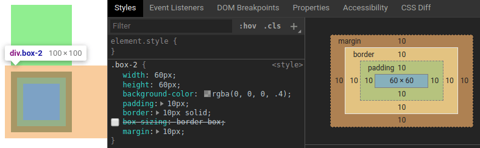
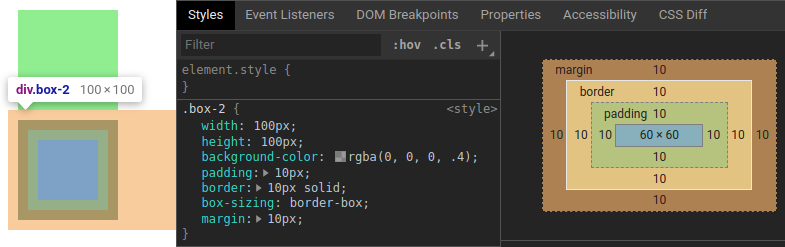
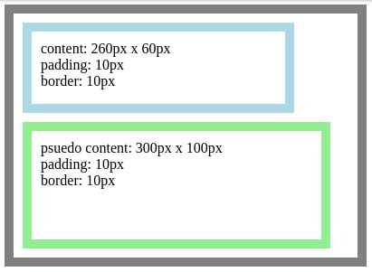
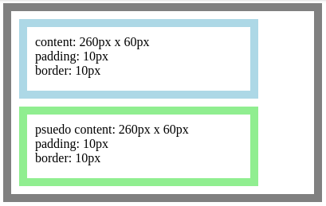

<!DOCTYPE html><html><head><meta name="generator" content="Hexo 3.9.0"><meta charset="utf-8"><title>重新認識 CSS - box-sizing | Titangene Blog</title><meta name="description" content="利用 blog 紀錄學習歷程"><meta http-equiv="X-UA-Compatible" content="IE=edge"><meta name="viewport" content="width=device-width,initial-scale=1,maximum-scale=1"><meta name="HandheldFriendly" content="True"><meta name="apple-mobile-web-app-capable" content="yes"><meta name="author" content="Titangene"><link rel="shortcut icon" href="/favicon.ico"><link rel="alternate" href="/atom.xml" title="Titangene Blog"><meta name="description" content="本篇將介紹 box-sizing 屬性是如何設定計算元素的總寬度和總高度。"><meta name="keywords" content="IT 鐵人賽"><meta property="og:type" content="article"><meta property="og:title" content="重新認識 CSS - box-sizing"><meta property="og:url" content="https://titangene.github.io/article/css-box-sizing.html"><meta property="og:site_name" content="Titangene Blog"><meta property="og:description" content="本篇將介紹 box-sizing 屬性是如何設定計算元素的總寬度和總高度。"><meta property="og:locale" content="zh-tw"><meta property="og:image" content="https://titangene.github.io/images/cover/css.png"><meta property="og:updated_time" content="2020-02-09T14:35:36.600Z"><meta name="twitter:card" content="summary_large_image"><meta name="twitter:title" content="重新認識 CSS - box-sizing"><meta name="twitter:description" content="本篇將介紹 box-sizing 屬性是如何設定計算元素的總寬度和總高度。"><meta name="twitter:image" content="https://titangene.github.io/images/cover/css.png"><meta name="twitter:creator" content="@titangeneTW"><meta name="twitter:site" content="@titangene_blog"><meta property="fb:admins" content="100001106016019"><meta property="fb:app_id" content="2470546159839111"><meta property="og:image:width" content="1200"><meta property="og:image:height" content="630"><meta name="google-site-verification" content="AaJ39L7h-nWwJjXJMhAMtXSF6H6BUgGWXC80kYvLic8"><link rel="stylesheet" href="//fonts.googleapis.com/css?family=Inconsolata|Titillium+Web"><link href="https://fonts.googleapis.com/css?family=Source+Code+Pro&display=swap" rel="stylesheet"><link rel="stylesheet" href="//use.fontawesome.com/releases/v5.7.0/css/all.css" integrity="sha384-lZN37f5QGtY3VHgisS14W3ExzMWZxybE1SJSEsQp9S+oqd12jhcu+A56Ebc1zFSJ" crossorigin="anonymous"><link rel="stylesheet" href="/style.css"><script async src="https://www.googletagmanager.com/gtag/js?id=UA-129758206-1"></script><script>!function(a){function n(){dataLayer.push(arguments)}a.dataLayer=a.dataLayer||[],n("js",new Date),n("config","UA-129758206-1")}(window)</script><script>function setLoadingBarProgress(e){document.getElementById("loading-bar").style.width=e+"%"}</script></head></html><body><div id="loading-bar-wrapper"><div id="loading-bar"></div></div><script>setLoadingBarProgress(20)</script><header class="l_header"><div class="wrapper"><div class="nav-main container container--flex"><a class="logo flat-box" href="/">Titangene Blog</a><div class="menu"><ul class="h-list"><li><a class="flat-box nav-home" href="/">Home</a></li><li><a class="flat-box nav-archives" href="/archives">Archives</a></li></ul><div class="underline"></div></div><div class="m_search"><form name="searchform" class="form u-search-form"><input type="text" class="input u-search-input" placeholder="Search"> <i class="fas fa-search"></i></form></div><ul class="switcher h-list"><li class="s-search"><a class="fas fa-search" href="javascript:void(0)"></a></li><li class="s-menu"><a class="fas fa-bars" href="javascript:void(0)"></a></li></ul></div><div class="nav-sub container container--flex"><a class="logo flat-box" href="/">Titangene Blog</a><ul class="switcher h-list"><li class="s-comment"><a class="far fa-comment-alt" href="javascript:void(0)"></a></li><li class="s-top"><a class="fas fa-arrow-up" href="javascript:void(0)"></a></li><li class="s-toc"><a class="fas fa-list-ol" href="javascript:void(0)"></a></li></ul></div></div></header><aside class="menu-phone"><nav><a href="/" class="nav-home nav">Home </a><a href="/archives" class="nav-archives nav">Archives</a></nav></aside><script>setLoadingBarProgress(40)</script><div class="l_body"><div class="container clearfix"><div class="l_main"><article id="post-css-box-sizing" class="post white-box article-type-post" itemscope itemprop="blogPost"><section class="meta"><h2 class="title"><a href="/article/css-box-sizing.html">重新認識 CSS - box-sizing</a></h2><span class="post-time"><span class="post-meta-item-icon"><i class="fa fa-calendar"></i> </span><span class="post-meta-item-text">發表於</span> <time title="建立時間：2019-10-01 19:30:15" itemprop="dateCreated datePublished" datetime="2019-10-01T19:30:15+08:00">2019-10-01 </time><span class="post-meta-divider">|</span> <span class="post-meta-item-icon"><i class="fa fa-calendar-check"></i> </span><span class="post-meta-item-text">更新於</span> <time title="修改時間：2020-02-09 22:35:36" itemprop="dateModified" datetime="2020-02-09T22:35:36+08:00">2020-02-09</time></span> <span class="comments-count"><span class="post-meta-divider">|</span> <span class="post-meta-item-icon"><i class="fas fa-comment"></i> </span><a href="https://titangene.github.io/article/css-box-sizing.html#disqus_thread" class="article-comment-count" data-disqus-identifier="article/css-box-sizing.html" itemprop="discussionUrl"></a></span><div class="post-category"><span class="post-meta-item-icon"><i class="fa fa-folder"></i> </span><span class="post-meta-item-text">分類於</span> <span itemprop="about" itemscope itemtype="http://schema.org/Thing"><a href="/categories/css/" itemprop="url" rel="index"><span itemprop="name">CSS</span></a></span></div></section><section class="toc-wrapper"><ol class="toc"><li class="toc-item toc-level-2"><a class="toc-link" href="#前言"><span class="toc-text">前言</span></a></li><li class="toc-item toc-level-2"><a class="toc-link" href="#各種-box-sizing-reset-方法"><span class="toc-text">各種 box-sizing reset 方法</span></a><ol class="toc-child"><li class="toc-item toc-level-3"><a class="toc-link" href="#舊的-box-sizing-reset-方法"><span class="toc-text">舊的 box-sizing reset 方法</span></a></li><li class="toc-item toc-level-3"><a class="toc-link" href="#Universal-box-sizing"><span class="toc-text">Universal box-sizing</span></a></li><li class="toc-item toc-level-3"><a class="toc-link" href="#繼承-box-sizing"><span class="toc-text">繼承 box-sizing</span></a></li></ol></li></ol></section><section class="article typo"><div class="article-entry" itemprop="articleBody"><p></p><p>本篇將介紹 <code>box-sizing</code> 屬性是如何設定計算元素的總寬度和總高度。</p><a id="more"></a><h2 id="前言"><a class="header-anchor" href="#前言"></a>前言</h2><blockquote><p>「重新認識 CSS」這個系列名稱的由來就如其名，我想要重新認識它。雖然以前就有學過 CSS，但這次想從 CSS Spec 中學到最原始的定義和內容，更加了解 CSS 的原理，讓我在切版的時候可以更加確定自己在做什麼，我踩到的雷只是因為我不夠了解它才會炸開。</p><p>本文同步發表於 iT 邦幫忙：<a href="https://ithelp.ithome.com.tw/articles/10223434" target="_blank" rel="noopener">重新認識 CSS - box-sizing</a></p><p>在這 30 天的內容中，會將 Spec 內看到的資料整理成這個系列，也希望正在學 CSS 的各位可以更加了解它。另外我也會同時將文章發至我的 Blog，如果想直接看文內的程式碼 Demo 畫面，可以到我的 Blog 來看 😃。</p><p>「重新認識 CSS」系列文章發文於：</p><ul><li><a href="https://ithelp.ithome.com.tw/users/20117586/ironman/2617" target="_blank" rel="noopener">iT 邦幫忙</a></li><li><a href="https://titangene.github.io/tags/it-%E9%90%B5%E4%BA%BA%E8%B3%BD/">Titangene Blog</a></li></ul></blockquote><p>下圖是 <code>box-sizing</code> 屬性的定義：</p><p></p><p>可以看到 <code>box-sizing</code> 屬性能用在任何元素，而且初始值為 <code>content-box</code>。</p><p>在 CSS box model 中，對元素指定寬度和高度會應用於 content box，如果又在該元素設定 border 或 padding 時，在視覺上會很像是增加元素的大小。也就是說當你想要讓該元素為某寬度或高度時，需要自行手動減去 border 或 padding 所佔用的空間，才能讓元素符合原本預期的寬高。</p><p>例如：</p><figure class="highlight html"><table><tr><td class="gutter"><pre><span class="line">1</span><br><span class="line">2</span><br></pre></td><td class="code"><pre><code class="hljs html"><span class="hljs-tag">&lt;<span class="hljs-name">div</span> <span class="hljs-attr">class</span>=<span class="hljs-string">"box-1"</span>&gt;</span><span class="hljs-tag">&lt;/<span class="hljs-name">div</span>&gt;</span><br><span class="hljs-tag">&lt;<span class="hljs-name">div</span> <span class="hljs-attr">class</span>=<span class="hljs-string">"box-2"</span>&gt;</span><span class="hljs-tag">&lt;/<span class="hljs-name">div</span>&gt;</span><br></code></pre></td></tr></table></figure><figure class="highlight css"><table><tr><td class="gutter"><pre><span class="line">1</span><br><span class="line">2</span><br><span class="line">3</span><br><span class="line">4</span><br><span class="line">5</span><br><span class="line">6</span><br><span class="line">7</span><br><span class="line">8</span><br><span class="line">9</span><br><span class="line">10</span><br><span class="line">11</span><br><span class="line">12</span><br><span class="line">13</span><br><span class="line">14</span><br></pre></td><td class="code"><pre><code class="hljs css"><span class="hljs-selector-class">.box-1</span> &#123;<br>  <span class="hljs-attribute">width</span>: <span class="hljs-number">100px</span>;<br>  <span class="hljs-attribute">height</span>: <span class="hljs-number">100px</span>;<br>  <span class="hljs-attribute">background-color</span>: lightgreen;<br>  <span class="hljs-attribute">margin</span>: <span class="hljs-number">10px</span>;<br>&#125;<br><span class="hljs-selector-class">.box-2</span> &#123;<br>  <span class="hljs-attribute">width</span>: <span class="hljs-number">100px</span>;<br>  <span class="hljs-attribute">height</span>: <span class="hljs-number">100px</span>;<br>  <span class="hljs-attribute">background-color</span>: <span class="hljs-built_in">rgba</span>(<span class="hljs-number">0</span>, <span class="hljs-number">0</span>, <span class="hljs-number">0</span>, .<span class="hljs-number">4</span>);<br>  <span class="hljs-attribute">padding</span>: <span class="hljs-number">10px</span>;<br>  <span class="hljs-attribute">border</span>: <span class="hljs-number">10px</span> solid;<br>  <span class="hljs-attribute">margin</span>: <span class="hljs-number">10px</span>;<br>&#125;<br></code></pre></td></tr></table></figure><p>如下圖，<code>.box-1</code> 元素和 <code>.box-2</code> 元素的 <code>width</code> 和 <code>height</code> 都一樣 (都是 100px)：</p><p></p><p>但是可以看出這兩個元素的大小明顯不同，這是因為 <code>.box-2</code> 元素比 <code>.box-1</code> 元素多了 padding 和 border：</p><p></p><p>各元素在視覺上所佔用的空間：</p><ul><li><code>.box-1</code> 元素：<ul><li>寬：<code>width</code> (100px)</li><li>高：<code>height</code> (100px)</li></ul></li><li><code>.box-2</code> 元素：<ul><li>寬佔用：<code>border-left-width</code> (10px) + <code>padding-left</code> (10px) + <code>width</code> (100px) + <code>padding-right</code> (10px) + <code>border-right-width</code> (10px) = 140px</li><li>高佔用：<code>border-top-height</code> (10px) + <code>padding-top</code> (10px) + <code>height</code> (100px) + <code>padding-bottom</code> (10px) + <code>border-bottom-height</code> (10px) = 140px</li></ul></li></ul><p>如果要 <code>.box-2</code> 元素要保留 border 和 padding，又要只佔用寬度和高度各 100px 就只能手動減去 border 或 padding，以上面範例就會改成這樣：</p><figure class="highlight css"><table><tr><td class="gutter"><pre><span class="line">1</span><br><span class="line">2</span><br><span class="line">3</span><br><span class="line">4</span><br><span class="line">5</span><br><span class="line">6</span><br><span class="line">7</span><br><span class="line">8</span><br></pre></td><td class="code"><pre><code class="hljs css"><span class="hljs-selector-class">.box-2</span> &#123;<br>  <span class="hljs-attribute">width</span>: <span class="hljs-number">60px</span>;<br>  <span class="hljs-attribute">height</span>: <span class="hljs-number">60px</span>;<br>  <span class="hljs-attribute">background-color</span>: <span class="hljs-built_in">rgba</span>(<span class="hljs-number">0</span>, <span class="hljs-number">0</span>, <span class="hljs-number">0</span>, .<span class="hljs-number">4</span>);<br>  <span class="hljs-attribute">padding</span>: <span class="hljs-number">10px</span>;<br>  <span class="hljs-attribute">border</span>: <span class="hljs-number">10px</span> solid;<br>  <span class="hljs-attribute">margin</span>: <span class="hljs-number">10px</span>;<br>&#125;<br></code></pre></td></tr></table></figure><p></p><p>雖然在視覺上，<code>.box-1</code> 元素和 <code>.box-2</code> 元素所佔用的空間變成一樣了，但是要自行計算 <code>width</code> 和 <code>height</code> 會很麻煩。這時就可以改用 <code>box-sizing: border-box</code>，它就會幫你自動計算扣除 border 或 padding 所剩餘的空間，應用在 content width 和 content height。</p><figure class="highlight css"><table><tr><td class="gutter"><pre><span class="line">1</span><br><span class="line">2</span><br><span class="line">3</span><br><span class="line">4</span><br><span class="line">5</span><br><span class="line">6</span><br><span class="line">7</span><br><span class="line">8</span><br><span class="line">9</span><br></pre></td><td class="code"><pre><code class="hljs css"><span class="hljs-selector-class">.box-2</span> &#123;<br>  <span class="hljs-attribute">width</span>: <span class="hljs-number">100px</span>;<br>  <span class="hljs-attribute">height</span>: <span class="hljs-number">100px</span>;<br>  <span class="hljs-attribute">background-color</span>: <span class="hljs-built_in">rgba</span>(<span class="hljs-number">0</span>, <span class="hljs-number">0</span>, <span class="hljs-number">0</span>, .<span class="hljs-number">4</span>);<br>  <span class="hljs-attribute">padding</span>: <span class="hljs-number">10px</span>;<br>  <span class="hljs-attribute">border</span>: <span class="hljs-number">10px</span> solid;<br>  <span class="hljs-attribute">box-sizing</span>: border-box;<br>  <span class="hljs-attribute">margin</span>: <span class="hljs-number">10px</span>;<br>&#125;<br></code></pre></td></tr></table></figure><p>如下圖，不用修改 <code>width</code> 和 <code>height</code> 就可以達到預期的效果：</p><p></p><p><code>content-box</code>：</p><ul><li><code>box-sizing</code> 屬性的初始值</li><li>指定的寬度和高度 (以及對應的最小/最大屬性) 分別應用於元素 content box 的寬度和高度</li></ul><h2 id="各種-box-sizing-reset-方法"><a class="header-anchor" href="#各種-box-sizing-reset-方法"></a>各種 <code>box-sizing</code> reset 方法</h2><h3 id="舊的-box-sizing-reset-方法"><a class="header-anchor" href="#舊的-box-sizing-reset-方法"></a>舊的 <code>box-sizing</code> reset 方法</h3><p>使用 universal selector 選擇所有元素，並將所有元素都設為 <code>box-sizing: border-box</code>。這個方法雖然可以對所有元素做設定，但沒有對 pseudo-element 設定 <code>box-sizing</code>：</p><figure class="highlight css"><table><tr><td class="gutter"><pre><span class="line">1</span><br><span class="line">2</span><br><span class="line">3</span><br></pre></td><td class="code"><pre><code class="hljs css">* &#123;<br>  <span class="hljs-attribute">box-sizing</span>: border-box;<br>&#125;<br></code></pre></td></tr></table></figure><p>例如：</p><figure class="highlight html"><table><tr><td class="gutter"><pre><span class="line">1</span><br><span class="line">2</span><br><span class="line">3</span><br></pre></td><td class="code"><pre><code class="hljs html"><span class="hljs-tag">&lt;<span class="hljs-name">div</span> <span class="hljs-attr">class</span>=<span class="hljs-string">"container"</span>&gt;</span><br>  <span class="hljs-tag">&lt;<span class="hljs-name">div</span> <span class="hljs-attr">class</span>=<span class="hljs-string">"child"</span>&gt;</span><span class="hljs-tag">&lt;/<span class="hljs-name">div</span>&gt;</span><br><span class="hljs-tag">&lt;/<span class="hljs-name">div</span>&gt;</span><br></code></pre></td></tr></table></figure><figure class="highlight css"><table><tr><td class="gutter"><pre><span class="line">1</span><br><span class="line">2</span><br><span class="line">3</span><br><span class="line">4</span><br><span class="line">5</span><br><span class="line">6</span><br><span class="line">7</span><br><span class="line">8</span><br><span class="line">9</span><br><span class="line">10</span><br><span class="line">11</span><br><span class="line">12</span><br><span class="line">13</span><br><span class="line">14</span><br><span class="line">15</span><br><span class="line">16</span><br><span class="line">17</span><br><span class="line">18</span><br><span class="line">19</span><br><span class="line">20</span><br><span class="line">21</span><br><span class="line">22</span><br><span class="line">23</span><br></pre></td><td class="code"><pre><code class="hljs css">* &#123;<br>  <span class="hljs-attribute">box-sizing</span>: border-box;<br>&#125;<br><span class="hljs-selector-class">.container</span> &#123;<br>  <span class="hljs-attribute">width</span>: <span class="hljs-number">400px</span>;<br>  <span class="hljs-attribute">padding</span>: <span class="hljs-number">10px</span>;<br>  <span class="hljs-attribute">border</span>: <span class="hljs-number">10px</span> solid gray;<br>&#125;<br><span class="hljs-selector-class">.child</span> &#123;<br>  <span class="hljs-attribute">width</span>: <span class="hljs-number">300px</span>;<br>  <span class="hljs-attribute">height</span>: <span class="hljs-number">100px</span>;<br>  <span class="hljs-attribute">padding</span>: <span class="hljs-number">10px</span>;<br>  <span class="hljs-attribute">border</span>: <span class="hljs-number">10px</span> solid lightblue;<br>  <span class="hljs-attribute">margin-bottom</span>: <span class="hljs-number">10px</span>;<br>&#125;<br><span class="hljs-selector-class">.container</span><span class="hljs-selector-pseudo">::after</span> &#123;<br>  <span class="hljs-attribute">content</span>: <span class="hljs-string">''</span>;<br>  <span class="hljs-attribute">display</span>: block;<br>  <span class="hljs-attribute">width</span>: <span class="hljs-number">300px</span>;<br>  <span class="hljs-attribute">height</span>: <span class="hljs-number">100px</span>;<br>  <span class="hljs-attribute">padding</span>: <span class="hljs-number">10px</span>;<br>  <span class="hljs-attribute">border</span>: <span class="hljs-number">10px</span> solid lightgreen;<br>&#125;<br></code></pre></td></tr></table></figure><p>Demo：<a href="https://codepen.io/titangene/pen/xxKvgxE" target="_blank" rel="noopener">Codepen 連結</a></p><p>如下圖，pseudo-element 的 <code>box-sizing</code> 還是預設值 <code>content-box</code>，所以 content box 的寬為 300px，高為 100px：</p><p></p><blockquote><p>selector 詳情可參考我前幾天寫的：</p><ul><li><a href="https://ithelp.ithome.com.tw/articles/10216566" target="_blank" rel="noopener">重新認識 CSS - CSS Selector (前傳)</a></li><li><a href="https://ithelp.ithome.com.tw/articles/10218712" target="_blank" rel="noopener">重新認識 CSS - Pseudo-element (偽元素)</a></li></ul></blockquote><h3 id="Universal-box-sizing"><a class="header-anchor" href="#Universal-box-sizing"></a>Universal <code>box-sizing</code></h3><p>後來也使用 universal selector 來選擇 pseudo-element：</p><figure class="highlight css"><table><tr><td class="gutter"><pre><span class="line">1</span><br><span class="line">2</span><br><span class="line">3</span><br></pre></td><td class="code"><pre><code class="hljs css">*, *<span class="hljs-selector-pseudo">::before</span>, *<span class="hljs-selector-pseudo">::after</span> &#123;<br>  <span class="hljs-attribute">box-sizing</span>: border-box;<br>&#125;<br></code></pre></td></tr></table></figure><p>若延續前面的範例，就可以看到 pseudo-element 也使用了 <code>box-sizing: border-box</code>：</p><p></p><h3 id="繼承-box-sizing"><a class="header-anchor" href="#繼承-box-sizing"></a>繼承 box-sizing</h3><p>剛剛的方法看似可行，但忽略了有些地方還是有 <code>box-sizing: content-box</code> 的需求：</p><p>如果想要讓所有元素都使用 <code>box-sizing: border-box</code>，最常見的作法是在 <code>html</code> 元素上設定 <code>box-sizing</code> 屬性，而所有其他元素則是使用 <code>inherit</code> 這個關鍵字來繼承該值：</p><figure class="highlight css"><table><tr><td class="gutter"><pre><span class="line">1</span><br><span class="line">2</span><br><span class="line">3</span><br><span class="line">4</span><br><span class="line">5</span><br><span class="line">6</span><br></pre></td><td class="code"><pre><code class="hljs css"><span class="hljs-selector-tag">html</span> &#123;<br>  <span class="hljs-attribute">box-sizing</span>: border-box;<br>&#125;<br>*, *<span class="hljs-selector-pseudo">::before</span>, *<span class="hljs-selector-pseudo">::after</span> &#123;<br>  <span class="hljs-attribute">box-sizing</span>: inherit;<br>&#125;<br></code></pre></td></tr></table></figure><p>資料來源：</p><ul><li><a href="https://www.w3.org/TR/css-ui-3/#box-sizing" target="_blank" rel="noopener">CSS Basic User Interface Module Level 3 (CSS3 UI) - 3.1. Changing the Box Model: the box-sizing property</a></li></ul></div><div class="article-tags tags"><a href="/tags/it-鐵人賽/" title="IT 鐵人賽">IT 鐵人賽</a></div></section><div class="article-share-links"><span>分享：</span> <a class="fab fa-facebook-f" title="Facebook" target="_blank" href="javascript:window.open('https://www.facebook.com/sharer.php?u=https%3A%2F%2Ftitangene.github.io%2Farticle%2Fcss-box-sizing.html', 'Share on Facebook','width=600, height=600')"></a> <a class="fab fa-twitter" title="Twitter" target="_blank" href="javascript:window.open('https://twitter.com/share?url=https%3A%2F%2Ftitangene.github.io%2Farticle%2Fcss-box-sizing.html&amp;text=重新認識 CSS - box-sizing&amp;hashtags=IT鐵人賽&amp;via=titangene_blog', 'Share on Twitter','width=600, height=260')"></a> <a class="fab fa-linkedin-in" title="Linkedin" target="_blank" href="javascript:window.open('https://www.linkedin.com/shareArticle?mini=true&amp;url=https%3A%2F%2Ftitangene.github.io%2Farticle%2Fcss-box-sizing.html&amp;title=重新認識 CSS - box-sizing', 'Share on Linkedin','width=600, height=600')"></a> <a class="fab fa-facebook-messenger" title="Facebook Messenger" target="_blank" href="javascript:window.open('http://www.facebook.com/dialog/send?app_id=2470546159839111&amp;link=https%3A%2F%2Ftitangene.github.io%2Farticle%2Fcss-box-sizing.html&amp;display=popup&amp;redirect_uri=https%3A%2F%2Fwww.facebook.com%2Fdialog%2Freturn%2Fclose%23_%3D_', 'Send in Messenger','width=600, height=600')"></a> <a class="fab fa-telegram-plane" href="https://telegram.me/share/url?url=https%3A%2F%2Ftitangene.github.io%2Farticle%2Fcss-box-sizing.html&text=重新認識 CSS - box-sizing" target="_blank"></a></div><nav id="article-nav"><a href="/article/css-border.html" id="article-nav-prev" class="article-nav-link-wrap" title="重新認識 CSS - Box model：border" rel="prev"><strong class="article-nav-caption">Prev</strong><p class="article-nav-title">重新認識 CSS - Box model：border</p><i class="fas fa-angle-left"></i> </a><a href="/article/css-collapsing-margins.html" id="article-nav-next" class="article-nav-link-wrap" title="重新認識 CSS - Collapsing margins" rel="next"><strong class="article-nav-caption">Next</strong><p class="article-nav-title">重新認識 CSS - Collapsing margins</p><i class="fas fa-angle-right"></i></a></nav><section id="list_related_posts"><h2>相關文章</h2><ul class="related-posts"><li class="related-posts-item"><a class="related-posts-link" href="/article/css-position.html">重新認識 CSS - position</a><div class="related-posts-item-abstract">本篇將介紹 CSS 的 position 屬性，包括 static、relative、absolute 和 fixed。前言「重新認識 CSS」這個系列名稱的由來就如其名，我想要重新認識它。雖然以前就有學過 CSS，但這</div></li><li class="related-posts-item"><a class="related-posts-link" href="/article/css-cascading-and-specificity.html">重新認識 CSS - Cascading & Specificity</a><div class="related-posts-item-abstract">CSS 可以在同份文件上使用多個 style sheet 來設定文件的樣式。如果你在不同 style sheet 內對同一個元素或屬性設定值時，就會 CSS 會透過 cascading 這個特性來解決這個衝突。本篇將介紹</div></li><li class="related-posts-item"><a class="related-posts-link" href="/article/css-inheritance.html">重新認識 CSS - Inheritance (繼承)</a><div class="related-posts-item-abstract">今天來介紹 CSS 的 Inheritance (繼承) 以及 inherit 這個關鍵字的屬性值。前言「重新認識 CSS」這個系列名稱的由來就如其名，我想要重新認識它。雖然以前就有學過 CSS，但這次想從 CSS Sp</div></li><li class="related-posts-item"><a class="related-posts-link" href="/article/css-value-processing.html">重新認識 CSS - CSS 如何處理屬性值</a><div class="related-posts-item-abstract">今天來介紹 CSS 如何處理屬性值。前言「重新認識 CSS」這個系列名稱的由來就如其名，我想要重新認識它。雖然以前就有學過 CSS，但這次想從 CSS Spec 中學到最原始的定義和內容，更加了解 CSS 的原理，讓我在</div></li><li class="related-posts-item"><a class="related-posts-link" href="/article/css-import.html">重新認識 CSS - @import</a><div class="related-posts-item-abstract">CSS 的 @import 規則可以從其他 style sheet 中 import 樣式規則，本篇將介紹如何使用。前言「重新認識 CSS」這個系列名稱的由來就如其名，我想要重新認識它。雖然以前就有學過 CSS，但這次想</div></li><li class="related-posts-item"><a class="related-posts-link" href="/article/css-box-generation-inline-box.html">重新認識 CSS - Visual formatting model：Box generation (inline box)</a><div class="related-posts-item-abstract">在 visual formatting model 中，document tree 中的每個元素都會根據 box model 生成 0 個或多個 box，box 分為兩種不同的 type：block 和 inline。本</div></li></ul></section><section class="comments" id="comments"><h2>討論區</h2><div id="disqus_thread"><noscript>Please enable JavaScript to view the <a href="https://disqus.com/?ref_noscript">comments powered by Disqus.</a></noscript></div></section></article><script>window.subData={title:"重新認識 CSS - box-sizing",tools:!0}</script></div><aside class="l_side"><section class="m_widget about"><div class="avatar-section"><style>.avatar-cover{background:url(/images/avatar_cover.jpg) 0 10%/cover no-repeat}</style><div class="avatar-cover"></div></div><div class="header">Titangene</div><div class="content"><div class="desc">利用 blog 紀錄學習歷程</div></div><div class="content"><meta itemprop="url" content="https://titangene.github.io"><div class="social-wrapper"><a itemprop="sameAs" href="https://github.com/titangene" class="social github" target="_blank" rel="external"><span class="fab fa-github-alt"></span> </a><a itemprop="sameAs" href="https://www.facebook.com/titangene.tw" class="social facebook" target="_blank" rel="external"><span class="fab fa-facebook-square"></span> </a><a itemprop="sameAs" href="https://www.instagram.com/titangene/" class="social instagram" target="_blank" rel="external"><span class="fab fa-instagram"></span> </a><a itemprop="sameAs" href="https://www.flickr.com/photos/titangene" class="social flickr" target="_blank" rel="external"><span class="fab fa-flickr"></span> </a><a itemprop="sameAs" href="/atom.xml" class="social rss" target="_blank" rel="external"><span class="fas fa-rss"></span></a></div></div></section><section class="m_widget facebook_page"><div class="fb-page" data-href="https://www.facebook.com/titangene.blog/" data-width="250" data-small-header="false" data-adapt-container-width="false" data-hide-cover="false" data-show-facepile="true"><blockquote cite="https://www.facebook.com/titangene.blog/" class="fb-xfbml-parse-ignore"><p><a href="https://www.facebook.com/titangene.blog/" class="social facebook" target="_blank"><span class="fab fa-facebook-square"></span></a></p><p><a href="https://www.facebook.com/titangene.blog/">Titangene Blog</a></p><p>Loading...</p></blockquote></div></section><section class="m_widget recent"><div class="header">Recents</div><div class="content"><ul class="entry"><li><a itemprop="url" class="flat-box" href="/article/git-index.html"><time>2020-03-08</time><div class="name">深入 Git：index 檔案</div></a></li><li><a itemprop="url" class="flat-box" href="/article/git-tree-object.html"><time>2020-03-01</time><div class="name">深入 Git：Git 物件儲存 - tree 物件</div></a></li><li><a itemprop="url" class="flat-box" href="/article/git-auto-crlf.html"><time>2020-02-23</time><div class="name">處理 Git 斷行字元的問題</div></a></li><li><a itemprop="url" class="flat-box" href="/article/git--blob-object.html"><time>2020-02-16</time><div class="name">深入 Git：Git 物件儲存 - blob 物件</div></a></li><li><a itemprop="url" class="flat-box" href="/article/git-delete-remote-branch.html"><time>2020-02-09</time><div class="name">Git - 刪除遠端分支 (以 GitHub、GitLab 為例)</div></a></li></ul></div></section></aside><script>setLoadingBarProgress(60)</script></div></div><footer id="footer" class="clearfix"><div class="social-wrapper"><a href="https://github.com/titangene" class="social github" target="_blank" rel="external"><span class="fab fa-github-alt"></span> </a><a href="https://www.facebook.com/titangene.tw" class="social facebook" target="_blank" rel="external"><span class="fab fa-facebook-square"></span> </a><a href="https://www.instagram.com/titangene/" class="social instagram" target="_blank" rel="external"><span class="fab fa-instagram"></span> </a><a href="https://www.flickr.com/photos/titangene" class="social flickr" target="_blank" rel="external"><span class="fab fa-flickr"></span> </a><a href="/atom.xml" class="social rss" target="_blank" rel="external"><span class="fas fa-rss"></span></a></div><div>© 2018 - 2020 <span itemprop="copyrightHolder">Titangene</span></div><div>Powered by <a href="https://hexo.io/" class="codename" rel="external">Hexo</a> - Theme <a href="https://github.com/stkevintan/hexo-theme-material-flow" class="codename" rel="external">MaterialFlow</a></div><div><a rel="license" href="http://creativecommons.org/licenses/by-nc-sa/4.0/" rel="external"></a></div></footer><script>setLoadingBarProgress(80)</script><script src="//cdnjs.cloudflare.com/ajax/libs/jquery/2.1.4/jquery.min.js"></script><script src="https://cdnjs.cloudflare.com/ajax/libs/moment.js/2.24.0/moment-with-locales.min.js"></script><script>moment.locale("zh-tw")</script><script src="https://cdnjs.cloudflare.com/ajax/libs/clipboard.js/2.0.0/clipboard.min.js"></script><script src="/js/jquery.fitvids.js"></script><script>var SEARCH_SERVICE="hexo",ROOT="/";ROOT.endsWith("/")||(ROOT+="/")</script><script src="/js/search.js"></script><script src="/js/app.js"></script><script src="/js/clipboard-use.js"></script><script>var disqus_shortname="titangene-blog",disqus_config=function(){this.page.url="https://titangene.github.io/article/css-box-sizing.html",this.page.identifier="article/css-box-sizing.html",this.page.title="重新認識 CSS - box-sizing"};!function(){var t=document.createElement("script");t.async=!0,t.src="//"+disqus_shortname+".disqus.com/embed.js",t.setAttribute("data-timestamp",""+new Date),(document.head||document.body).appendChild(t)}()</script><script id="dsq-count-scr" src="https://titangene-blog.disqus.com/count.js" async></script><div id="fb-root"></div><script>window.fbAsyncInit=function(){FB.init({appId:"2470546159839111",autoLogAppEvents:!0,xfbml:!0,version:"v2.11"}),FB.AppEvents.logPageView()},function(e,n,t){var o,s=e.getElementsByTagName(n)[0];e.getElementById(t)||((o=e.createElement(n)).id=t,o.src="//connect.facebook.net/zh_TW/sdk.js",s.parentNode.insertBefore(o,s))}(document,"script","facebook-jssdk")</script><script>setLoadingBarProgress(100)</script></body>